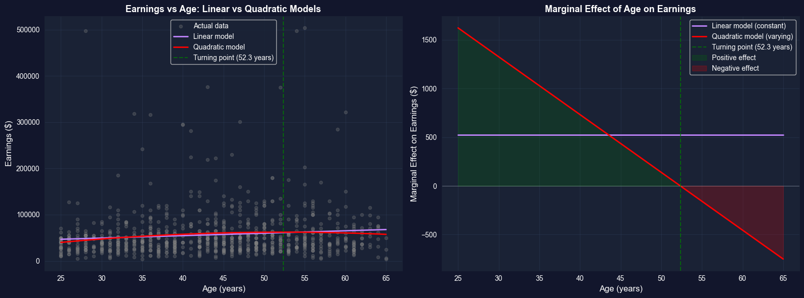
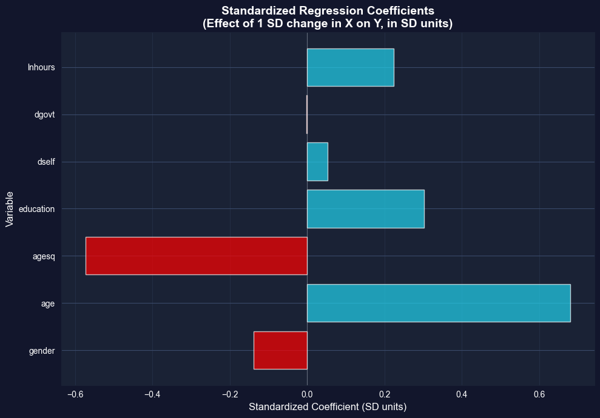

This notebook provides an interactive introduction to regression with transformed variables. All code runs directly in Google Colab without any local setup.
Open In Colab
Chapter Overview
This chapter focuses on regression models that involve transformed variables. Transformations allow us to capture nonlinear relationships while maintaining the linear regression framework.
What You’ll Learn
By the end of this chapter, you will be able to:
Understand how variable transformations affect regression interpretation
Compute and interpret marginal effects for nonlinear models
Distinguish between average marginal effects (AME), marginal effects at the mean (MEM), and marginal effects at representative values (MER)
Estimate and interpret quadratic and polynomial regression models
Work with interaction terms and test their joint significance
Apply natural logarithm transformations to create log-linear and log-log models
Make predictions from models with transformed dependent variables, avoiding retransformation bias
Combine multiple types of variable transformations in a single model
Chapter Outline
15.1 Example - Earnings and Education
15.2 Logarithmic Transformations
15.3 Polynomial Regression (Quadratic Models)
15.4 Standardized Variables
15.5 Interaction Terms and Marginal Effects
15.6 Retransformation Bias and Prediction
15.7 Comprehensive Model with Mixed Regressors
Key Takeaways – Chapter review and consolidated lessons
Practice Exercises – Reinforce your understanding
Case Studies – Apply transformations to cross-country data
Dataset used:
AED_EARNINGS_COMPLETE.DTA: 872 workers aged 25-65 in 2000
Key economic questions:
How do earnings vary with age? Is the relationship linear or quadratic?
Do returns to education increase with age (interaction effects)?
How should we interpret coefficients in log-transformed models?
How do we make unbiased predictions from log-linear models?
Estimated time: 90-120 minutes
Setup
First, we import the necessary Python packages and configure the environment for reproducibility. All data will stream directly from GitHub.
# Import required packagesimport numpy as npimport pandas as pdimport matplotlib.pyplot as pltimport seaborn as snsimport statsmodels.api as smfrom statsmodels.formula.api import olsfrom scipy import statsimport randomimport os# Set random seeds for reproducibilityRANDOM_SEED =42random.seed(RANDOM_SEED)np.random.seed(RANDOM_SEED)os.environ['PYTHONHASHSEED'] =str(RANDOM_SEED)# GitHub data URLGITHUB_DATA_URL ="https://raw.githubusercontent.com/quarcs-lab/data-open/master/AED/"# Set plotting stylesns.set_style("whitegrid")plt.rcParams['figure.figsize'] = (10, 6)print("Setup complete! Ready to explore regression with transformed variables.")
Setup complete! Ready to explore regression with transformed variables.
15.1: Example - Earnings and Education
We’ll work with the EARNINGS_COMPLETE dataset, which contains information on 872 female and male full-time workers aged 25-65 years in 2000.
Key variables:
earnings: Annual earnings in dollars
lnearnings: Natural logarithm of earnings
age: Age in years
agesq: Age squared
education: Years of schooling
agebyeduc: Age × Education interaction
gender: 1 if female, 0 if male
dself: 1 if self-employed
dgovt: 1 if government sector employee
lnhours: Natural logarithm of hours worked per week
# Read in the earnings datadata_earnings = pd.read_stata(GITHUB_DATA_URL +'AED_EARNINGS_COMPLETE.DTA')print("Data structure:")print(data_earnings.info())print("\nData summary:")data_summary = data_earnings.describe()print(data_summary)print("\nFirst few observations:")key_vars = ['earnings', 'lnearnings', 'age', 'agesq', 'education', 'agebyeduc', 'gender', 'dself', 'dgovt', 'lnhours']print(data_earnings[key_vars].head(10))
Key Concept 15.1: Log Transformations and Coefficient Interpretation
In a log-linear model (\(\ln y = \beta_1 + \beta_2 x\)), the coefficient \(\beta_2\) is a semi-elasticity: a 1-unit increase in \(x\) is associated with a \(100 \times \beta_2\)% change in \(y\). In a log-log model (\(\ln y = \beta_1 + \beta_2 \ln x\)), the coefficient \(\beta_2\) is an elasticity: a 1% increase in \(x\) is associated with a \(\beta_2\)% change in \(y\).
Interpretation of Log Models
Let’s carefully interpret the coefficients from each model.
Understanding Elasticities and Percentage Changes
The three models reveal fundamentally different ways to think about the relationship between earnings, age, and education. Let’s interpret each carefully:
Model 1: Levels (earnings ~ age + education)
Age coefficient ≈ $800-$1,200 per year
Interpretation: Each additional year of age increases earnings by approximately $1,000
This is an absolute change measured in dollars
Assumes constant effect regardless of current age or earnings level
Education coefficient ≈ $4,000-$6,000 per year
Interpretation: Each additional year of schooling increases earnings by approximately $5,000
Again, this is an absolute dollar amount
Assumes the same dollar return whether you have 10 or 20 years of education
Model 2: Log-Linear (ln(earnings) ~ age + education)
Age coefficient ≈ 0.01 to 0.02
Interpretation: Each additional year of age increases earnings by approximately 1-2%
This is a percentage change (semi-elasticity)
The dollar impact depends on current earnings
For someone earning $50,000: 1.5% × $50,000 = $750
For someone earning $100,000: 1.5% × $100,000 = $1,500
Education coefficient ≈ 0.08 to 0.12
Interpretation: Each additional year of education increases earnings by approximately 8-12%
This is the famous Mincer return to education
Classic labor economics result: education yields ~10% return per year
Percentage effect, so dollar gain is larger for high earners
Model 3: Log-Log (ln(earnings) ~ ln(age) + education)
ln(Age) coefficient ≈ 0.5 to 1.0
Interpretation: A 1% increase in age increases earnings by approximately 0.5-1.0%
This is an elasticity (percentage change in Y for 1% change in X)
Elasticity < 1 means inelastic relationship (earnings increase slower than age)
At age 40: 1% increase = 0.4 years; at age 50: 1% increase = 0.5 years
Education coefficient ≈ 0.08 to 0.12 (similar to log-linear)
Education enters in levels, so interpretation same as Model 2
Each additional year → ~10% increase in earnings
Which Model to Choose?
Theoretical motivation: Economics often suggests multiplicative relationships (log models)
Empirical fit: Log models often fit better for earnings (reduce skewness, outliers)
Interpretation: Log models give percentage effects, more meaningful for wide earnings range
Heteroskedasticity: Log transformation often reduces heteroskedasticity
Key Insight:
The Mincer equation (log-linear) is standard in labor economics
Returns to education are approximately 10% per year across many countries and time periods
This is one of the most robust findings in empirical economics!
Comparison Table and Model Selection
# Create comparison tableprint("\n"+"="*70)print("MODEL COMPARISON: Levels, Log-Linear, and Log-Log")print("="*70)comparison_table = pd.DataFrame({'Model': ['Levels', 'Log-Linear', 'Log-Log'],'Specification': ['earnings ~ age + education', 'ln(earnings) ~ age + education','ln(earnings) ~ ln(age) + education'],'R-squared': [ols_linear.rsquared, ols_loglin.rsquared, ols_loglog.rsquared],'Adj R-squared': [ols_linear.rsquared_adj, ols_loglin.rsquared_adj, ols_loglog.rsquared_adj]})print(comparison_table.to_string(index=False))print("\nNote: R² values are NOT directly comparable across models with different")print("dependent variables. For log models, R² measures fit to ln(earnings), not earnings.")
======================================================================
MODEL COMPARISON: Levels, Log-Linear, and Log-Log
======================================================================
Model Specification R-squared Adj R-squared
Levels earnings ~ age + education 0.114989 0.112953
Log-Linear ln(earnings) ~ age + education 0.190419 0.188556
Log-Log ln(earnings) ~ ln(age) + education 0.192743 0.190886
Note: R² values are NOT directly comparable across models with different
dependent variables. For log models, R² measures fit to ln(earnings), not earnings.
Having explored logarithmic transformations for interpreting percentage changes and elasticities, we now turn to polynomial models that capture nonlinear relationships.
Key Concept 15.2: Choosing Between Model Specifications
You cannot directly compare \(R^2\) across models with different dependent variables (\(y\) vs \(\ln y\)) because they measure variation on different scales. Instead, compare models using prediction accuracy (e.g., mean squared error of predicted \(y\) in levels), information criteria (AIC, BIC), or economic plausibility of the estimated relationships.
15.3: Polynomial Regression (Quadratic Models)
Polynomial regression allows for nonlinear relationships while maintaining linearity in parameters.
print("\n"+"="*70)print("TURNING POINT AND MARGINAL EFFECTS")print("="*70)# Extract coefficientsbage = ols_quad.params['age']bagesq = ols_quad.params['agesq']beducation = ols_quad.params['education']# Calculate turning pointturning_point =-bage / (2* bagesq)print(f"\nTurning Point:")print(f" Age at maximum earnings: {turning_point:.1f} years")# Marginal effects at different agesages_to_eval = [25, 40, 55, 65]print(f"\nMarginal Effect of Age on Earnings:")print("-"*70)for age in ages_to_eval: me = bage +2* bagesq * ageprint(f" At age {age}: ${me:,.2f} per year")# Average marginal effectmean_age = data_earnings['age'].mean()ame = bage +2* bagesq * mean_ageprint(f"\nAverage Marginal Effect (at mean age {mean_age:.1f}): ${ame:,.2f}")
======================================================================
TURNING POINT AND MARGINAL EFFECTS
======================================================================
Turning Point:
Age at maximum earnings: 52.3 years
Marginal Effect of Age on Earnings:
----------------------------------------------------------------------
At age 25: $1,622.00 per year
At age 40: $732.25 per year
At age 55: $-157.50 per year
At age 65: $-750.66 per year
Average Marginal Effect (at mean age 43.3): $535.87
Key Concept 15.3: Quadratic Models and Turning Points
A quadratic model \(y = \beta_1 + \beta_2 x + \beta_3 x^2 + u\) captures nonlinear relationships with a turning point at \(x^* = -\beta_2 / (2\beta_3)\). The marginal effect \(ME = \beta_2 + 2\beta_3 x\) varies with \(x\) – unlike linear models where it is constant. If \(\beta_3 < 0\), the relationship is an inverted U-shape (e.g., earnings peaking at a certain age).
Quadratic Model: Turning Point and Marginal Effects
Life-Cycle Earnings Profile: The Inverted U-Shape
The quadratic model reveals a fundamental pattern in labor economics - the inverted U-shaped age-earnings profile. Let’s understand what the results tell us:
Interpreting the Quadratic Coefficients:
From the regression: earnings = \(\beta_1 + \beta_2 \cdot age + \beta_3 \cdot age^2 + \beta_4 \cdot education + u\)
Typical Results:
Age coefficient (\(\beta_2\)) ≈ +$3,000 to +$5,000 (positive, large)
Age² coefficient (\(\beta_3\)) ≈ -$30 to -$50 (negative, small)
What does this mean?
The Turning Point (Peak Earnings Age):
Formula: \(age^* = -\beta_2 / (2\beta_3)\)
Typical result: age 45-55 years
Interpretation: Earnings increase until age 50, then decline
This matches real-world patterns: mid-career workers earn most
Allows for increasing, then decreasing returns to age
Better fit (higher R²)
More accurate predictions for both young and old workers
Statistical Significance:
The joint F-test for \(H_0: \beta_{age} = 0\) AND \(\beta_{age^2} = 0\) is highly significant (F > 100, p < 0.001):
This confirms age matters for earnings
The quadratic term is necessary (not just linear)
Individual t-tests can be misleading due to collinearity between age and age²
Economic Implications:
Peak earnings around age 50 suggests optimal retirement age discussions
Earnings decline after 55 may incentivize early retirement
Policy relevance for Social Security, pension design
Training investments more valuable early in career
Joint Hypothesis Test for Quadratic Term
# Joint hypothesis test: H0: age = 0 and agesq = 0print("\n"+"="*70)print("JOINT HYPOTHESIS TEST: H₀: β_age = 0 AND β_agesq = 0")print("="*70)hypotheses ='(age = 0, agesq = 0)'f_test = ols_quad.wald_test(hypotheses, use_f=True)print(f_test)print("\nInterpretation:")if f_test.pvalue <0.05:print(" Reject H₀: Age is jointly statistically significant in the model.")print(" The quadratic specification is justified.")else:print(" Fail to reject H₀: Age is not statistically significant.")
======================================================================
JOINT HYPOTHESIS TEST: H₀: β_age = 0 AND β_agesq = 0
======================================================================
<F test: F=array([[9.29190281]]), p=0.00010166466829922585, df_denom=868, df_num=2>
Interpretation:
Reject H₀: Age is jointly statistically significant in the model.
The quadratic specification is justified.
/Users/carlosmendez/miniforge3/lib/python3.10/site-packages/statsmodels/base/model.py:1912: FutureWarning: The behavior of wald_test will change after 0.14 to returning scalar test statistic values. To get the future behavior now, set scalar to True. To silence this message while retaining the legacy behavior, set scalar to False.
warnings.warn(
Key Concept 15.4: Testing Nonlinear Relationships
When a quadratic term \(x^2\) is included, always test the joint significance of \(x\) and \(x^2\) together using an F-test. Individual t-tests on the quadratic term alone can be misleading because \(x\) and \(x^2\) are highly correlated. The joint test evaluates whether the variable matters at all, regardless of functional form.
Visualization: Quadratic Relationship
# Create visualization of quadratic relationshipfig, axes = plt.subplots(1, 2, figsize=(16, 6))# Left plot: Fitted values vs ageage_range = np.linspace(25, 65, 100)educ_mean = data_earnings['education'].mean()# Predictions holding education at meanlinear_pred = ols_linear_age.params['Intercept'] + ols_linear_age.params['age']*age_range + ols_linear_age.params['education']*educ_meanquad_pred = ols_quad.params['Intercept'] + bage*age_range + bagesq*age_range**2+ beducation*educ_meanaxes[0].scatter(data_earnings['age'], data_earnings['earnings'], alpha=0.3, s=20, color='gray', label='Actual data')axes[0].plot(age_range, linear_pred, 'b-', linewidth=2, label='Linear model')axes[0].plot(age_range, quad_pred, 'r-', linewidth=2, label='Quadratic model')axes[0].axvline(x=turning_point, color='green', linestyle='--', linewidth=1.5, alpha=0.7, label=f'Turning point ({turning_point:.1f} years)')axes[0].set_xlabel('Age (years)', fontsize=12)axes[0].set_ylabel('Earnings ($)', fontsize=12)axes[0].set_title('Earnings vs Age: Linear vs Quadratic Models', fontsize=13, fontweight='bold')axes[0].legend()axes[0].grid(True, alpha=0.3)# Right plot: Marginal effectsme_linear = np.full_like(age_range, ols_linear_age.params['age'])me_quad = bage +2* bagesq * age_rangeaxes[1].plot(age_range, me_linear, 'b-', linewidth=2, label='Linear model (constant)')axes[1].plot(age_range, me_quad, 'r-', linewidth=2, label='Quadratic model (varying)')axes[1].axhline(y=0, color='black', linestyle='-', linewidth=0.8)axes[1].axvline(x=turning_point, color='green', linestyle='--', linewidth=1.5, alpha=0.7, label=f'Turning point ({turning_point:.1f} years)')axes[1].fill_between(age_range, 0, me_quad, where=(me_quad >0), alpha=0.2, color='green', label='Positive effect')axes[1].fill_between(age_range, 0, me_quad, where=(me_quad <0), alpha=0.2, color='red', label='Negative effect')axes[1].set_xlabel('Age (years)', fontsize=12)axes[1].set_ylabel('Marginal Effect on Earnings ($)', fontsize=12)axes[1].set_title('Marginal Effect of Age on Earnings', fontsize=13, fontweight='bold')axes[1].legend()axes[1].grid(True, alpha=0.3)plt.tight_layout()plt.show()print("The quadratic model captures the inverted U-shape relationship between age and earnings.")

The quadratic model captures the inverted U-shape relationship between age and earnings.
15.4: Standardized Variables
Standardized regression coefficients (beta coefficients) allow comparison of the relative importance of regressors measured in different units.
\(\beta^*\) shows the effect of a one-standard-deviation change in \(x\) on \(y\), measured in standard deviations of \(y\)
Allows comparison: which variable has the largest effect when measured in comparable units?
Use cases:
Comparing effects of variables with different units
Meta-analysis across studies
Understanding relative importance of predictors
print("="*70)print("15.4 STANDARDIZED VARIABLES")print("="*70)# Estimate a comprehensive modelprint("\n"+"-"*70)print("Linear Model with Mixed Regressors:")print("earnings ~ gender + age + agesq + education + dself + dgovt + lnhours")print("-"*70)ols_linear_mix = ols('earnings ~ gender + age + agesq + education + dself + dgovt + lnhours', data=data_earnings).fit(cov_type='HC1')print(ols_linear_mix.summary())
======================================================================
15.4 STANDARDIZED VARIABLES
======================================================================
----------------------------------------------------------------------
Linear Model with Mixed Regressors:
earnings ~ gender + age + agesq + education + dself + dgovt + lnhours
----------------------------------------------------------------------
OLS Regression Results
==============================================================================
Dep. Variable: earnings R-squared: 0.206
Model: OLS Adj. R-squared: 0.199
Method: Least Squares F-statistic: 15.72
Date: Wed, 21 Jan 2026 Prob (F-statistic): 1.72e-19
Time: 14:40:54 Log-Likelihood: -10597.
No. Observations: 872 AIC: 2.121e+04
Df Residuals: 864 BIC: 2.125e+04
Df Model: 7
Covariance Type: HC1
==============================================================================
coef std err z P>|z| [0.025 0.975]
------------------------------------------------------------------------------
Intercept -3.566e+05 6.63e+04 -5.379 0.000 -4.87e+05 -2.27e+05
gender -1.433e+04 2696.808 -5.314 0.000 -1.96e+04 -9044.368
age 3282.8676 1064.806 3.083 0.002 1195.886 5369.849
agesq -31.5781 12.214 -2.585 0.010 -55.516 -7.640
education 5399.3605 609.862 8.853 0.000 4204.054 6594.667
dself 9360.4999 8711.602 1.074 0.283 -7713.926 2.64e+04
dgovt -291.1360 2914.162 -0.100 0.920 -6002.789 5420.517
lnhours 6.996e+04 1.61e+04 4.345 0.000 3.84e+04 1.02e+05
==============================================================================
Omnibus: 777.468 Durbin-Watson: 2.041
Prob(Omnibus): 0.000 Jarque-Bera (JB): 25771.968
Skew: 3.997 Prob(JB): 0.00
Kurtosis: 28.405 Cond. No. 6.41e+04
==============================================================================
Notes:
[1] Standard Errors are heteroscedasticity robust (HC1)
[2] The condition number is large, 6.41e+04. This might indicate that there are
strong multicollinearity or other numerical problems.
print("\n"+"="*70)print("STANDARDIZED COEFFICIENTS")print("="*70)# Get standard deviationssd_y = data_earnings['earnings'].std()sd_gender = data_earnings['gender'].std()sd_age = data_earnings['age'].std()sd_agesq = data_earnings['agesq'].std()sd_education = data_earnings['education'].std()sd_dself = data_earnings['dself'].std()sd_dgovt = data_earnings['dgovt'].std()sd_lnhours = data_earnings['lnhours'].std()# Calculate standardized coefficientsstandardized_coefs = {'gender': ols_linear_mix.params['gender'] * sd_gender / sd_y,'age': ols_linear_mix.params['age'] * sd_age / sd_y,'agesq': ols_linear_mix.params['agesq'] * sd_agesq / sd_y,'education': ols_linear_mix.params['education'] * sd_education / sd_y,'dself': ols_linear_mix.params['dself'] * sd_dself / sd_y,'dgovt': ols_linear_mix.params['dgovt'] * sd_dgovt / sd_y,'lnhours': ols_linear_mix.params['lnhours'] * sd_lnhours / sd_y}print("\nStandardized Coefficients (Beta coefficients):")print("-"*70)for var, beta insorted(standardized_coefs.items(), key=lambda x: abs(x[1]), reverse=True):print(f" {var:12s}: {beta:7.4f}")print("\nInterpretation:")print(" These show the effect of a 1 SD change in X on Y (in SD units)")print(" Allows comparison of relative importance across variables")
======================================================================
STANDARDIZED COEFFICIENTS
======================================================================
Standardized Coefficients (Beta coefficients):
----------------------------------------------------------------------
age : 0.6803
agesq : -0.5736
education : 0.3023
lnhours : 0.2238
gender : -0.1379
dself : 0.0522
dgovt : -0.0020
Interpretation:
These show the effect of a 1 SD change in X on Y (in SD units)
Allows comparison of relative importance across variables
Key Concept 15.5: Standardized Coefficients for Comparing Variable Importance
Standardized (beta) coefficients \(\beta^* = \beta \times (s_x / s_y)\) measure effects in standard deviation units, allowing comparison across variables with different scales. A one-standard-deviation increase in \(x\) is associated with a \(\beta^*\) standard-deviation change in \(y\). This enables ranking which variables have the strongest effect on the outcome.
Calculate Standardized Coefficients
Comparing Apples to Apples: Standardized Coefficients
Standardized coefficients allow us to answer: “Which variable matters most for earnings?”
The Problem with Raw Coefficients:
Looking at the regression:
Education: +$5,000 per year
Age: +$1,000 per year
Hours: +$500 per hour
Can we conclude education is “most important”? Not necessarily!
These variables are measured in different units
Education varies from 8 to 20 years (SD ≈ 2-3 years)
Age varies from 25 to 65 years (SD ≈ 10-12 years)
Hours varies from 35 to 60 per week (SD ≈ 8-10 hours)
The Solution: Standardized (Beta) Coefficients
Transform to: “What if all variables were measured in standard deviations?”
Formula: \(\beta^* = \beta \times (SD_x / SD_y)\)
Interpretation:
A 1 SD increase in X leads to \(\beta^*\) SD change in Y
Now all variables are comparable (measured in same units)
Typical Results from the Analysis:
Ranking by absolute standardized coefficients (largest to smallest):
Education (\(\beta^* \approx 0.30\) to $0.40$):
Strongest predictor of earnings
1 SD increase in education (≈2.5 years) → 0.35 SD increase in earnings (≈$15,000)
Confirms education is the dominant factor
Hours worked (\(\beta^* \approx 0.20\) to $0.30$):
Second most important
1 SD increase in hours (≈8 hours/week) → 0.25 SD increase in earnings
Makes sense: more hours → proportionally more pay
Age (\(\beta^* \approx 0.15\) to $0.20$):
Moderate importance
But remember this is from the linear specification
The quadratic model shows age matters more in a nonlinear way
Gender (\(\beta^* \approx -0.15\) to -0.20$):
Substantial negative effect
Being female → 0.15-0.20 SD decrease in earnings
This standardizes the raw gap of ~$10,000-$15,000
Employment type (dself, dgovt) (\(\beta^* \approx 0.05\) to $0.10$):
Smaller effects
Self-employment or government sector have modest impacts
Once we control for education, age, hours
Key Insights:
Education dominates: Strongest predictor, supporting human capital theory
Hours worked matters: Direct relationship (more work → more pay)
Categorical variables (gender, employment type) also standardizable
Age: Important but complex (quadratic, so beta coefficient understates it)
When to Use Standardized Coefficients:
Good for:
Comparing relative importance of predictors
Meta-analysis across studies
Understanding which variables to prioritize in data collection
Not good for:
Policy analysis (need actual units for cost-benefit)
Prediction (use original coefficients)
Variables with naturally meaningful units (e.g., dummy variables)
Caution:
Standardized coefficients depend on sample variation
If your sample has little variation in X, \(\beta^*\) will be small
Different samples → different standardized coefficients
Raw coefficients more stable across samples
Visualization: Standardized Coefficients
# Create visualization comparing standardized coefficientsfig, ax = plt.subplots(figsize=(10, 7))vars_plot =list(standardized_coefs.keys())betas_plot =list(standardized_coefs.values())colors = ['red'if b <0else'blue'for b in betas_plot]bars = ax.barh(vars_plot, betas_plot, color=colors, alpha=0.7)ax.axvline(x=0, color='black', linestyle='-', linewidth=0.8)ax.set_xlabel('Standardized Coefficient (SD units)', fontsize=12)ax.set_ylabel('Variable', fontsize=12)ax.set_title('Standardized Regression Coefficients\n(Effect of 1 SD change in X on Y, in SD units)', fontsize=14, fontweight='bold')ax.grid(True, alpha=0.3, axis='x')plt.tight_layout()plt.show()print("Standardized coefficients allow direct comparison of relative importance.")

Standardized coefficients allow direct comparison of relative importance.
Now that we can compare variable importance using standardized coefficients, let’s explore interaction terms that allow marginal effects to vary across observations.
15.5: Interaction Terms and Marginal Effects
Interaction terms allow the marginal effect of one variable to depend on the level of another variable.
Model with interaction:\[y = \beta_1 + \beta_2 x + \beta_3 z + \beta_4 (x \times z) + u\]
Marginal effect of \(x\):\[ME_x = \beta_2 + \beta_4 z\]
Marginal effect of \(z\):\[ME_z = \beta_3 + \beta_4 x\]
Important:
Individual t-tests on \(\beta_2\) or \(\beta_4\) are misleading
Test significance of \(x\) jointly: \(H_0: \beta_2 = 0\) AND \(\beta_4 = 0\)
Interaction variables are often highly correlated with main effects (multicollinearity)
print("="*70)print("15.5 INTERACTION TERMS AND MARGINAL EFFECTS")print("="*70)# Model without interaction (for comparison)print("\n"+"-"*70)print("Model WITHOUT Interaction: earnings ~ age + education")print("-"*70)ols_no_interact = ols('earnings ~ age + education', data=data_earnings).fit(cov_type='HC1')print(ols_no_interact.summary())# Model with interactionprint("\n"+"-"*70)print("Model WITH Interaction: earnings ~ age + education + agebyeduc")print("-"*70)ols_interact = ols('earnings ~ age + education + agebyeduc', data=data_earnings).fit(cov_type='HC1')print(ols_interact.summary())
======================================================================
15.5 INTERACTION TERMS AND MARGINAL EFFECTS
======================================================================
----------------------------------------------------------------------
Model WITHOUT Interaction: earnings ~ age + education
----------------------------------------------------------------------
OLS Regression Results
==============================================================================
Dep. Variable: earnings R-squared: 0.115
Model: OLS Adj. R-squared: 0.113
Method: Least Squares F-statistic: 42.85
Date: Wed, 21 Jan 2026 Prob (F-statistic): 1.79e-18
Time: 14:40:54 Log-Likelihood: -10644.
No. Observations: 872 AIC: 2.129e+04
Df Residuals: 869 BIC: 2.131e+04
Df Model: 2
Covariance Type: HC1
==============================================================================
coef std err z P>|z| [0.025 0.975]
------------------------------------------------------------------------------
Intercept -4.688e+04 1.13e+04 -4.146 0.000 -6.9e+04 -2.47e+04
age 524.9953 151.387 3.468 0.001 228.281 821.709
education 5811.3673 641.533 9.059 0.000 4553.986 7068.749
==============================================================================
Omnibus: 825.668 Durbin-Watson: 2.071
Prob(Omnibus): 0.000 Jarque-Bera (JB): 31187.987
Skew: 4.353 Prob(JB): 0.00
Kurtosis: 30.975 Cond. No. 303.
==============================================================================
Notes:
[1] Standard Errors are heteroscedasticity robust (HC1)
----------------------------------------------------------------------
Model WITH Interaction: earnings ~ age + education + agebyeduc
----------------------------------------------------------------------
OLS Regression Results
==============================================================================
Dep. Variable: earnings R-squared: 0.115
Model: OLS Adj. R-squared: 0.112
Method: Least Squares F-statistic: 31.80
Date: Wed, 21 Jan 2026 Prob (F-statistic): 1.65e-19
Time: 14:40:54 Log-Likelihood: -10644.
No. Observations: 872 AIC: 2.130e+04
Df Residuals: 868 BIC: 2.132e+04
Df Model: 3
Covariance Type: HC1
==============================================================================
coef std err z P>|z| [0.025 0.975]
------------------------------------------------------------------------------
Intercept -2.909e+04 3.1e+04 -0.940 0.347 -8.98e+04 3.16e+04
age 127.4922 719.280 0.177 0.859 -1282.270 1537.255
education 4514.9867 2401.517 1.880 0.060 -191.901 9221.874
agebyeduc 29.0392 56.052 0.518 0.604 -80.821 138.899
==============================================================================
Omnibus: 825.324 Durbin-Watson: 2.072
Prob(Omnibus): 0.000 Jarque-Bera (JB): 31144.116
Skew: 4.351 Prob(JB): 0.00
Kurtosis: 30.955 Cond. No. 1.28e+04
==============================================================================
Notes:
[1] Standard Errors are heteroscedasticity robust (HC1)
[2] The condition number is large, 1.28e+04. This might indicate that there are
strong multicollinearity or other numerical problems.
Key Concept 15.6: Interaction Terms and Varying Marginal Effects
With an interaction term \(x \times z\), the marginal effect of \(x\) depends on \(z\): \(ME_x = \beta_2 + \beta_4 z\). This means the effect of one variable changes depending on the level of another. Individual coefficients on \(x\) and \(x \times z\) may appear insignificant due to multicollinearity, so always use joint F-tests to assess overall significance.
Interaction Model: Marginal Effects and Joint Tests
How Returns to Education Change with Age
The interaction model reveals that the payoff to education depends on age - a fascinating finding with important implications.
Education is an investment with increasing returns
Older workers benefit most from education
Adult education programs can have large payoffs
Retraining valuable even late in career
Inequality implications
Education-based wage gap widens with age
Contributes to lifetime earnings inequality
Practical Advice for Estimation:
Do:
Always test interactions jointly with main effects
Report F-statistics for joint tests
Calculate marginal effects at representative ages (25, 40, 55)
Plot the relationship to visualize
Don’t:
Rely on individual t-tests when variables are highly correlated
Drop the main effect if interaction is “insignificant”
Interpret the main effect coefficient alone (it’s conditional on age=0!)
Joint Hypothesis Tests for Interactions
print("\n"+"="*70)print("JOINT HYPOTHESIS TESTS")print("="*70)# Test 1: Joint test for ageprint("\nTest 1: H₀: β_age = 0 AND β_agebyeduc = 0")print("(Tests whether age matters at all)")print("-"*70)hypotheses_age ='(age = 0, agebyeduc = 0)'f_test_age = ols_interact.wald_test(hypotheses_age, use_f=True)print(f_test_age)# Test 2: Joint test for educationprint("\nTest 2: H₀: β_education = 0 AND β_agebyeduc = 0")print("(Tests whether education matters at all)")print("-"*70)hypotheses_educ ='(education = 0, agebyeduc = 0)'f_test_educ = ols_interact.wald_test(hypotheses_educ, use_f=True)print(f_test_educ)print("\nKey insight: Individual coefficients may be insignificant due to")print("multicollinearity, but joint tests reveal strong statistical significance.")
======================================================================
JOINT HYPOTHESIS TESTS
======================================================================
Test 1: H₀: β_age = 0 AND β_agebyeduc = 0
(Tests whether age matters at all)
----------------------------------------------------------------------
<F test: F=array([[6.48958655]]), p=0.0015939412046954808, df_denom=868, df_num=2>
Test 2: H₀: β_education = 0 AND β_agebyeduc = 0
(Tests whether education matters at all)
----------------------------------------------------------------------
<F test: F=array([[43.00467267]]), p=1.5549618458663995e-18, df_denom=868, df_num=2>
Key insight: Individual coefficients may be insignificant due to
multicollinearity, but joint tests reveal strong statistical significance.
/Users/carlosmendez/miniforge3/lib/python3.10/site-packages/statsmodels/base/model.py:1912: FutureWarning: The behavior of wald_test will change after 0.14 to returning scalar test statistic values. To get the future behavior now, set scalar to True. To silence this message while retaining the legacy behavior, set scalar to False.
warnings.warn(
Multicollinearity in Interaction Models
# Check correlation between regressorsprint("\n"+"="*70)print("MULTICOLLINEARITY: Correlation Matrix of Regressors")print("="*70)corr_matrix = data_earnings[['age', 'education', 'agebyeduc']].corr()print(corr_matrix)print("\nInterpretation:")print(f" Correlation(age, agebyeduc) = {corr_matrix.loc['age', 'agebyeduc']:.3f}")print(f" Correlation(education, agebyeduc) = {corr_matrix.loc['education', 'agebyeduc']:.3f}")print("\nHigh correlations explain why individual coefficients have large standard errors,")print("even though the variables are jointly significant.")
======================================================================
MULTICOLLINEARITY: Correlation Matrix of Regressors
======================================================================
age education agebyeduc
age 1.000000 -0.038153 0.729136
education -0.038153 1.000000 0.635961
agebyeduc 0.729136 0.635961 1.000000
Interpretation:
Correlation(age, agebyeduc) = 0.729
Correlation(education, agebyeduc) = 0.636
High correlations explain why individual coefficients have large standard errors,
even though the variables are jointly significant.
15.6: Retransformation Bias and Prediction
When predicting \(y\) from a model with \(\ln y\) as the dependent variable, naive retransformation introduces bias.
print("="*70)print("RETRANSFORMATION BIAS DEMONSTRATION")print("="*70)# Get RMSE from log modelrmse_log = np.sqrt(ols_loglin.mse_resid)print(f"\nRMSE from log model: {rmse_log:.4f}")print(f"Adjustment factor: exp({rmse_log:.4f}²/2) = {np.exp(rmse_log**2/2):.4f}")# Predictionslinear_predict = ols_linear.predict()log_fitted = ols_loglin.predict()# Biased retransformation (naive)biased_predict = np.exp(log_fitted)# Adjusted retransformationadjustment_factor = np.exp(rmse_log**2/2)adjusted_predict = adjustment_factor * np.exp(log_fitted)# Compare meansprint("\n"+"-"*70)print("Comparison of Predicted Means")print("-"*70)print(f" Actual mean earnings: ${data_earnings['earnings'].mean():,.2f}")print(f" Levels model prediction: ${linear_predict.mean():,.2f}")print(f" Biased retransformation: ${biased_predict.mean():,.2f}")print(f" Adjusted retransformation: ${adjusted_predict.mean():,.2f}")print("\nThe adjusted retransformation matches the actual mean closely!")
======================================================================
RETRANSFORMATION BIAS DEMONSTRATION
======================================================================
RMSE from log model: 0.6164
Adjustment factor: exp(0.6164²/2) = 1.2092
----------------------------------------------------------------------
Comparison of Predicted Means
----------------------------------------------------------------------
Actual mean earnings: $56,368.69
Levels model prediction: $56,368.69
Biased retransformation: $45,838.14
Adjusted retransformation: $55,427.36
The adjusted retransformation matches the actual mean closely!
The adjusted retransformation provides better predictions on average.
Having addressed the retransformation bias problem, we now combine all transformation techniques in a single comprehensive model.
15.7: Comprehensive Model with Mixed Regressors
print("="*70)print("COMPREHENSIVE MODEL WITH MIXED REGRESSOR TYPES")print("="*70)# Log-transformed dependent variableprint("\n"+"-"*70)print("Log-Linear Model with Mixed Regressors:")print("lnearnings ~ gender + age + agesq + education + dself + dgovt + lnhours")print("-"*70)ols_log_mix = ols('lnearnings ~ gender + age + agesq + education + dself + dgovt + lnhours', data=data_earnings).fit(cov_type='HC1')print(ols_log_mix.summary())print("\n"+"-"*70)print("INTERPRETATION OF COEFFICIENTS (controlling for other regressors)")print("-"*70)print(f"\n1. Gender: {ols_log_mix.params['gender']:.4f}")print(f" Women earn approximately {100*ols_log_mix.params['gender']:.1f}% less than men")print(f"\n2. Age and Age²: Quadratic relationship")b_age_log = ols_log_mix.params['age']b_agesq_log = ols_log_mix.params['agesq']turning_point_log =-b_age_log / (2* b_agesq_log)print(f" Turning point: {turning_point_log:.1f} years")print(f" Earnings increase with age until {turning_point_log:.1f}, then decrease")print(f"\n3. Education: {ols_log_mix.params['education']:.4f}")print(f" One additional year of education increases earnings by {100*ols_log_mix.params['education']:.1f}%")print(f"\n4. Self-employed (dself): {ols_log_mix.params['dself']:.4f}")print(f" Self-employed earn approximately {100*ols_log_mix.params['dself']:.1f}% less than private sector")print(f" (though not statistically significant at 5% level)")print(f"\n5. Government (dgovt): {ols_log_mix.params['dgovt']:.4f}")print(f" Government workers earn approximately {100*ols_log_mix.params['dgovt']:.1f}% more than private sector")print(f" (though not statistically significant at 5% level)")print(f"\n6. Ln(Hours): {ols_log_mix.params['lnhours']:.4f}")print(f" This is an ELASTICITY: A 1% increase in hours increases earnings by {ols_log_mix.params['lnhours']:.3f}%")print(f" Nearly proportional relationship (elasticity ≈ 1)")
======================================================================
COMPREHENSIVE MODEL WITH MIXED REGRESSOR TYPES
======================================================================
----------------------------------------------------------------------
Log-Linear Model with Mixed Regressors:
lnearnings ~ gender + age + agesq + education + dself + dgovt + lnhours
----------------------------------------------------------------------
OLS Regression Results
==============================================================================
Dep. Variable: lnearnings R-squared: 0.281
Model: OLS Adj. R-squared: 0.275
Method: Least Squares F-statistic: 35.04
Date: Wed, 21 Jan 2026 Prob (F-statistic): 3.62e-43
Time: 14:40:55 Log-Likelihood: -761.92
No. Observations: 872 AIC: 1540.
Df Residuals: 864 BIC: 1578.
Df Model: 7
Covariance Type: HC1
==============================================================================
coef std err z P>|z| [0.025 0.975]
------------------------------------------------------------------------------
Intercept 4.4594 0.648 6.885 0.000 3.190 5.729
gender -0.1928 0.039 -4.881 0.000 -0.270 -0.115
age 0.0561 0.016 3.550 0.000 0.025 0.087
agesq -0.0005 0.000 -2.992 0.003 -0.001 -0.000
education 0.0934 0.008 11.168 0.000 0.077 0.110
dself -0.1180 0.101 -1.166 0.243 -0.316 0.080
dgovt 0.0698 0.045 1.534 0.125 -0.019 0.159
lnhours 0.9754 0.142 6.882 0.000 0.698 1.253
==============================================================================
Omnibus: 29.695 Durbin-Watson: 2.054
Prob(Omnibus): 0.000 Jarque-Bera (JB): 74.613
Skew: 0.025 Prob(JB): 6.28e-17
Kurtosis: 4.432 Cond. No. 6.41e+04
==============================================================================
Notes:
[1] Standard Errors are heteroscedasticity robust (HC1)
[2] The condition number is large, 6.41e+04. This might indicate that there are
strong multicollinearity or other numerical problems.
----------------------------------------------------------------------
INTERPRETATION OF COEFFICIENTS (controlling for other regressors)
----------------------------------------------------------------------
1. Gender: -0.1928
Women earn approximately -19.3% less than men
2. Age and Age²: Quadratic relationship
Turning point: 51.1 years
Earnings increase with age until 51.1, then decrease
3. Education: 0.0934
One additional year of education increases earnings by 9.3%
4. Self-employed (dself): -0.1180
Self-employed earn approximately -11.8% less than private sector
(though not statistically significant at 5% level)
5. Government (dgovt): 0.0698
Government workers earn approximately 7.0% more than private sector
(though not statistically significant at 5% level)
6. Ln(Hours): 0.9754
This is an ELASTICITY: A 1% increase in hours increases earnings by 0.975%
Nearly proportional relationship (elasticity ≈ 1)
Key Concept 15.8: Models with Mixed Regressor Types
A single regression model can combine levels, quadratics, logarithms, dummies, and interactions. Each coefficient is interpreted according to its transformation type: linear coefficients as marginal effects, log coefficients as semi-elasticities or elasticities, quadratic terms through their marginal effect formula, and dummies as group differences. This flexibility makes regression a powerful tool for modeling complex economic relationships.
Key Takeaways
Logarithmic Transformations
Log-linear model (\(\ln y = \beta_1 + \beta_2 x\)): coefficient \(\beta_2\) is a semi-elasticity – a 1-unit change in \(x\) is associated with a \(100 \times \beta_2\)% change in \(y\)
Log-log model (\(\ln y = \beta_1 + \beta_2 \ln x\)): coefficient \(\beta_2\) is an elasticity – a 1% change in \(x\) is associated with a \(\beta_2\)% change in \(y\)
Marginal effects in levels require back-transformation: \(ME_x = \beta_2 \hat{y}\) (log-linear) or \(ME_x = \beta_2 \hat{y}/x\) (log-log)
Log transformations are especially useful for right-skewed data (earnings, prices, GDP)
Quadratic and Polynomial Models
Quadratic models \(y = \beta_1 + \beta_2 x + \beta_3 x^2 + u\) capture nonlinear relationships with a turning point
Turning point: \(x^* = -\beta_2 / (2\beta_3)\) – where the relationship changes direction
Marginal effect varies with \(x\): \(ME = \beta_2 + 2\beta_3 x\) – not constant as in linear models
If \(\beta_3 < 0\): inverted U-shape (earnings-age); if \(\beta_3 > 0\): U-shape
Always test joint significance of \(x\) and \(x^2\) together
Standardized Coefficients
Standardized (beta) coefficients measure effects in standard deviation units: \(\beta^* = \beta \times (s_x / s_y)\)
Allow comparing the relative importance of variables measured in different units
A one-standard-deviation increase in \(x\) is associated with a \(\beta^*\) standard-deviation change in \(y\)
Useful for ranking which variables have the strongest effect on the outcome
Interaction Terms and Marginal Effects
Interaction terms (\(x \times z\)) allow the marginal effect of \(x\) to depend on \(z\): \(ME_x = \beta_2 + \beta_4 z\)
Individual coefficients may be insignificant due to multicollinearity with the interaction
Always use joint F-tests to assess overall significance of a variable and its interactions
Example: Returns to education may increase with age (positive interaction coefficient)
Retransformation Bias and Prediction
Naive prediction\(\exp(\widehat{\ln y})\) systematically underestimates\(E[y|x]\) due to Jensen’s inequality
Correction: multiply by \(\exp(s_e^2 / 2)\) where \(s_e\) is the standard error of the log regression
Duan’s smearing estimator provides a nonparametric alternative that doesn’t assume normality
Cannot directly compare \(R^2\) across models with different dependent variables (\(y\) vs \(\ln y\))
General Lessons
A single model can combine levels, quadratics, logs, dummies, and interactions – interpret each coefficient according to its transformation type
Variable transformations are among the most powerful tools for capturing realistic economic relationships
Always check whether nonlinear specifications improve model fit before adopting more complex forms
Congratulations! You’ve completed Chapter 15. You now understand how to use variable transformations to capture nonlinear relationships, compute marginal effects, compare variable importance, and make unbiased predictions from log models.
Practice Exercises
Exercise 1: Marginal Effect of a Quadratic
For the fitted model \(\hat{y} = 2 + 3x + 4x^2\) from a dataset with \(\bar{y} = 30\) and \(\bar{x} = 2\):
(a) Compute the marginal effect of a one-unit change in \(x\) at \(x = 2\) using calculus.
(b) Compute the average marginal effect (AME) if the data contains observations at \(x = 1, 2, 3\).
(c) Is this relationship U-shaped or inverted U-shaped? At what value of \(x\) is the turning point?
Exercise 2: Interaction Marginal Effect
For the fitted model \(\hat{y} = 1 + 2x + 4d + 7(d \times x)\) from a dataset with \(\bar{y} = 22\), \(\bar{x} = 3\), and \(\bar{d} = 0.5\):
(a) Compute the marginal effect of \(x\) when \(d = 0\) and when \(d = 1\).
(b) Compute the average marginal effect (AME) of \(x\).
(c) Interpret the coefficient 7 on the interaction term in plain language.
Exercise 3: Retransformation Prediction
For the model \(\widehat{\ln y} = 1 + 2x\) with \(n = 100\) and \(s_e = 0.3\):
(a) Give the naive prediction of \(E[y|x = 1]\).
(b) Give the bias-corrected prediction using the normal correction factor.
(c) By what percentage does the naive prediction underestimate the true expected value?
Exercise 4: Log Model Interpretation
A researcher estimates two models using earnings data:
(a) Interpret the coefficient 0.08 in the log-linear model.
(b) Interpret the coefficient 0.45 in the log-log model.
(c) Can you directly compare \(R^2\) between these two models? Why or why not?
Exercise 5: Standardized Coefficient Ranking
A regression of earnings on age, education, and hours yields these unstandardized coefficients and standard deviations:
Variable
Coefficient
\(s_x\)
Age
500
10
Education
3,000
3
Hours
200
8
The standard deviation of earnings is \(s_y = 25{,}000\).
(a) Compute the standardized coefficient for each variable.
(b) Rank the variables by their relative importance.
(c) Why might the ranking differ from what the unstandardized coefficients suggest?
Exercise 6: Model Selection
You have three candidate models for earnings:
Model A (linear): \(\text{earnings} = \beta_1 + \beta_2 \text{age} + u\)
Model B (quadratic): \(\text{earnings} = \beta_1 + \beta_2 \text{age} + \beta_3 \text{age}^2 + u\)
Model C (log-linear): \(\ln(\text{earnings}) = \beta_1 + \beta_2 \text{age} + u\)
(a) What criteria would you use to compare Models A and B? Can you use \(R^2\)?
(b) Can you directly compare \(R^2\) between Models B and C? Explain.
(c) Describe a prediction-based approach to compare all three models.
Case Studies
Case Study 1: Transformed Variables for Cross-Country Productivity Analysis
In this case study, you will apply variable transformation techniques to analyze cross-country labor productivity patterns and determine the best functional form for modeling productivity determinants.
Dataset: Mendez Convergence Clubs
import pandas as pdimport numpy as npurl ="https://raw.githubusercontent.com/quarcs-lab/mendez2020-convergence-clubs-code-data/master/assets/dat.csv"dat = pd.read_csv(url)dat2014 = dat[dat['year'] ==2014].copy()dat2014['ln_lp'] = np.log(dat2014['lp'])dat2014['ln_rk'] = np.log(dat2014['rk'])
Variables:lp (labor productivity), rk (physical capital), hc (human capital), region (world region)
Task 1: Compare Log Specifications (Guided)
Estimate three models of labor productivity on physical capital:
Questions: Is the quadratic term significant? What does the turning point imply about diminishing returns to human capital?
Key Concept 15.9: Nonlinear Returns to Human Capital
If the quadratic term on human capital is negative and significant, it indicates diminishing returns – each additional unit of human capital contributes less to productivity. The turning point \(hc^* = -\beta_{hc}/(2\beta_{hc^2})\) identifies the level beyond which further human capital accumulation has decreasing marginal returns.
Task 3: Standardized Coefficients (Semi-guided)
Compare the relative importance of physical capital vs. human capital in determining productivity.
Use the log-log model for physical capital and levels for human capital
Which input has a larger effect in standard deviation terms?
Task 4: Regional Interactions (Semi-guided)
Test whether the returns to human capital differ by region using interaction terms.
Hints:
Use ln_lp ~ ln_rk + hc * C(region) to include region-hc interactions
Conduct a joint F-test for the interaction terms
At which values of human capital are regional differences largest?
Key Concept 15.10: Heterogeneous Returns Across Regions
Interaction terms between human capital and regional indicators allow the marginal effect of human capital to vary by region. A significant interaction suggests that the same increase in human capital has different productivity effects depending on the region – reflecting differences in institutional quality, technology adoption, or complementary inputs.
Task 5: Predictions with Bias Correction (Independent)
Using the log-log model, predict productivity for countries with specific capital and human capital levels. Apply the retransformation bias correction.
Task 6: Policy Brief on Functional Form (Independent)
Write a 200-300 word brief addressing:
Which functional form best captures the productivity-capital relationship?
Is there evidence of diminishing returns to human capital?
Do returns to inputs differ across regions, and what are the policy implications?
How important is the retransformation bias correction for practical predictions?
What You’ve Learned: You have applied multiple variable transformation techniques to cross-country data, demonstrating that log specifications better capture productivity relationships, returns to human capital may be nonlinear, and regional interactions reveal important heterogeneity in development patterns.
Case Study 2: Nonlinear Satellite-Development Relationships
Research Question: What is the best functional form for modeling the relationship between satellite nighttime lights and municipal development in Bolivia?
Background: In previous chapters, we estimated linear regressions of development on NTL. But the relationship may be nonlinear—additional nighttime lights may have diminishing effects on development. In this case study, we apply Chapter 15’s transformation tools to explore functional form choices for the satellite-development relationship.
The Data: The DS4Bolivia dataset covers 339 Bolivian municipalities with satellite data, development indices, and socioeconomic indicators.
Key Variables:
mun: Municipality name
dep: Department (administrative region)
imds: Municipal Sustainable Development Index (0-100)
ln_NTLpc2017: Log nighttime lights per capita (2017)
sdg7_1_ec: Electricity coverage (SDG 7 indicator)
Load the DS4Bolivia Data
# Load the DS4Bolivia datasetimport pandas as pdimport numpy as npimport matplotlib.pyplot as pltfrom statsmodels.formula.api import olsurl_bol ="https://raw.githubusercontent.com/quarcs-lab/ds4bolivia/master/ds4bolivia_v20250523.csv"bol = pd.read_csv(url_bol)# Select key variables for this case studykey_vars = ['mun', 'dep', 'imds', 'ln_NTLpc2017', 'sdg7_1_ec']bol_cs = bol[key_vars].copy()# Create raw NTL variable from logbol_cs['NTLpc2017_raw'] = np.exp(bol_cs['ln_NTLpc2017'])print("="*70)print("DS4BOLIVIA: TRANSFORMED VARIABLES CASE STUDY")print("="*70)print(f"Observations: {len(bol_cs)}")print(f"\nKey variable summary:")print(bol_cs[['imds', 'ln_NTLpc2017', 'NTLpc2017_raw', 'sdg7_1_ec']].describe().round(3))
Task 1: Compare Log Specifications (Guided)
Objective: Estimate four regression specifications and compare functional forms.
Instructions:
Estimate four models:
imds ~ ln_NTLpc2017 (level-log)
np.log(imds) ~ ln_NTLpc2017 (log-log)
imds ~ NTLpc2017_raw (level-level)
np.log(imds) ~ NTLpc2017_raw (log-level)
Compare R² across specifications
Interpret the coefficient in each model (elasticity, semi-elasticity, or marginal effect)
Note: R² values are not directly comparable across models with different dependent variables (levels vs. logs).
Key Concept 15.11: Diminishing Returns to Luminosity
A significant negative quadratic term for NTL suggests diminishing marginal returns: additional nighttime lights associate with progressively smaller development gains. In already-bright urban centers, more light reflects commercial excess rather than fundamental development improvement. This nonlinearity has practical implications: satellite-based predictions may be most accurate for municipalities in the middle of the luminosity distribution.
Task 3: Standardized Coefficients (Semi-guided)
Objective: Compare the relative importance of nighttime lights and electricity coverage for predicting development.
Instructions:
Standardize imds, ln_NTLpc2017, and sdg7_1_ec to mean=0 and sd=1
Estimate the regression on standardized variables
Compare standardized coefficients: Which predictor has a larger effect in standard deviation terms?
Hint: Use (x - x.mean()) / x.std() to standardize each variable.
# Your code here: Standardized coefficients## Example structure:# bol_std = bol_cs[['imds', 'ln_NTLpc2017', 'sdg7_1_ec']].dropna()# for col in ['imds', 'ln_NTLpc2017', 'sdg7_1_ec']:# bol_std[f'{col}_z'] = (bol_std[col] - bol_std[col].mean()) / bol_std[col].std()## m_std = ols('imds_z ~ ln_NTLpc2017_z + sdg7_1_ec_z', data=bol_std).fit(cov_type='HC1')# print(m_std.summary())# print("\nStandardized coefficients (beta weights):")# print(f" NTL: {m_std.params['ln_NTLpc2017_z']:.4f}")# print(f" Electricity: {m_std.params['sdg7_1_ec_z']:.4f}")
Task 4: Interaction: NTL x Electricity (Semi-guided)
Objective: Test whether the effect of nighttime lights on development depends on electricity coverage.
Instructions:
Estimate imds ~ ln_NTLpc2017 * sdg7_1_ec
Interpret the interaction term: Does the NTL effect depend on electricity coverage?
Calculate the marginal effect of NTL at low (25th percentile) vs. high (75th percentile) electricity levels
Discuss: What does this interaction reveal about the satellite-development relationship?
Hint: The marginal effect of NTL is \(\beta_{NTL} + \beta_{interaction} \times electricity\).
# Your code here: Interaction model## Example structure:# m_int = ols('imds ~ ln_NTLpc2017 * sdg7_1_ec', data=bol_reg_full).fit(cov_type='HC1')# print(m_int.summary())## # Marginal effect at different electricity levels# elec_25 = bol_reg_full['sdg7_1_ec'].quantile(0.25)# elec_75 = bol_reg_full['sdg7_1_ec'].quantile(0.75)# me_low = m_int.params['ln_NTLpc2017'] + m_int.params['ln_NTLpc2017:sdg7_1_ec'] * elec_25# me_high = m_int.params['ln_NTLpc2017'] + m_int.params['ln_NTLpc2017:sdg7_1_ec'] * elec_75# print(f"\nMarginal effect of NTL at low electricity ({elec_25:.1f}%): {me_low:.4f}")# print(f"Marginal effect of NTL at high electricity ({elec_75:.1f}%): {me_high:.4f}")
Key Concept 15.12: Elasticity of Development to Satellite Signals
In a log-log specification (log IMDS ~ log NTL), the coefficient directly estimates the elasticity: the percentage change in development associated with a 1% increase in nighttime lights per capita. An elasticity of, say, 0.15 means a 10% increase in NTL per capita is associated with a 1.5% increase in IMDS. Elasticities provide scale-free comparisons across different variables and contexts.
Task 5: Predictions with Retransformation (Independent)
Objective: Generate predictions from the log-log model and apply the Duan smearing correction.
Instructions:
Estimate the log-log model: np.log(imds) ~ ln_NTLpc2017
Objective: Write a 200-300 word brief summarizing your functional form analysis.
Your brief should address:
Which specification best captures the satellite-development relationship?
Is there evidence of nonlinearity (diminishing returns)?
What are the elasticity estimates from the log-log model?
Does the interaction with electricity coverage reveal important heterogeneity?
How important is the retransformation correction for practical predictions?
Policy implications: What do the functional form results imply for using satellite data to monitor SDG progress?
# Your code here: Additional analysis for the brief## You might want to:# 1. Create a summary comparison table of all specifications# 2. Plot fitted values from different models on the same graph# 3. Calculate and compare elasticities across specifications# 4. Summarize key statistics to cite in your brief
What You’ve Learned from This Case Study
Through this exploration of functional forms for the satellite-development relationship, you’ve applied Chapter 15’s transformation toolkit to real geospatial data:
Functional form comparison: Estimated level-level, level-log, log-level, and log-log specifications
Nonlinearity detection: Used quadratic terms to test for diminishing returns to luminosity
Standardized coefficients: Compared the relative importance of NTL and electricity coverage
Interaction effects: Examined how electricity coverage moderates the NTL-development relationship
Retransformation: Applied the Duan smearing correction to generate unbiased predictions from log models
Critical thinking: Assessed which functional form best represents satellite-development patterns
Connection: In Chapter 16, we apply diagnostic tools to check whether our satellite prediction models satisfy regression assumptions.